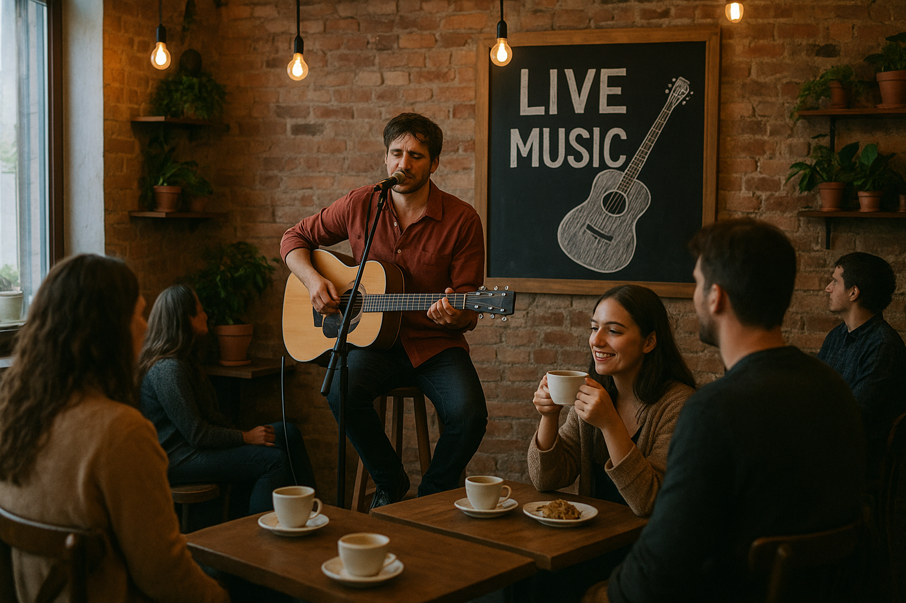

Um pouco do que é o evento

O evento Músicafé reune dois grandes amores de grande
parte das pessoas.
como evidencia o nome, a
música e o café se reúnem e faz nascer um novo ambiente
para quem gosta de aproveitar uma boa música enquanto
bebe seu querido café.
O evento tras artistas diversos
e oferece café para seu publico aproveitar o evento com
amigos e familiares.
Quais artistas estão confirmados?
Dentre os diversos amantes da cafeina, os que iram se apresentar são:
- Caetano Espresso
- Gilberto Moka
- Anitta Latte
- Milton Capuccino
- Elis Crema
- Djavan Avelã
- Café Melim
- Luan Macchiato
- Pingado Maia
- Ivete Caféína
Quais os tipos de café do evento?
Apesar dos diversos artistas, o evento principal é formado por eles:
- Café Arábe
- Café Robusta
- Café Gourmet
- Café Extra Forte
- Café Tradicional
- Café Torrado e Moído
- Café Solúvel
- Café Espresso
- Café Descafeinado
- Café Mineiro